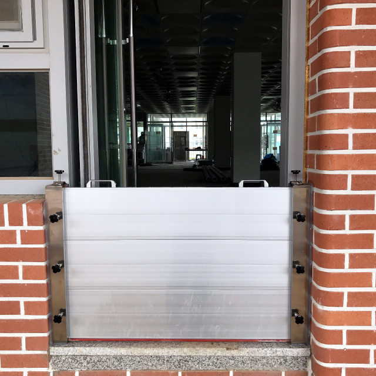
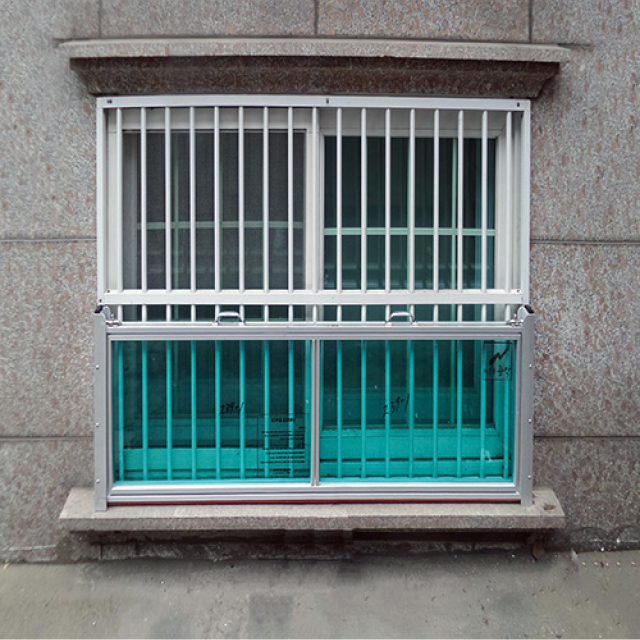
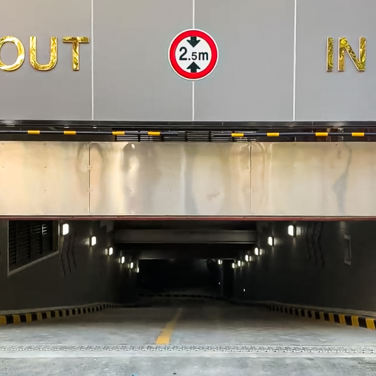
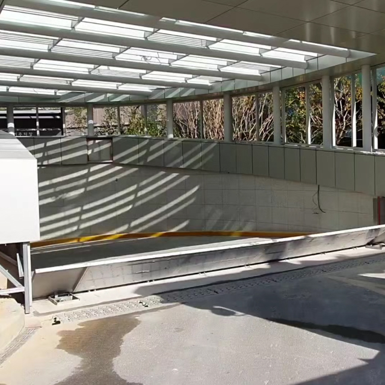
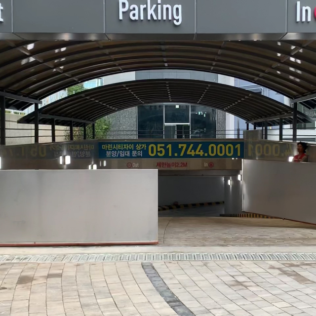

스마트 안전게이트IoT Safety Gate
차수판
주택과 건물에 침수가 발생하면 인명피해는 물론 엄청난 규모의 재산피해가 발생합니다. 차수판은 주로 공동주택, 일반주택, 건물/빌딩 등의 지하추자장, 창문, 출입구 등에 설치하여 침수를 방지합니다. 또한 도래샘의 전동 차수판을 설치하면 원격(PC, 핸드폰)에서 여러개의 차수판을 동시에 열고 닫을 수 있습니다. 스마트 원격관제시스템을 도입하여 실시간으로 확인하고 제어하여 효율적으로 재난상황에대처할 수 있습니다.
-

- 지주식 차수판 AL [슬라이딩(Sliding), z축]
- 지주식 차수판은 시중에 가장 많이 보급된 차수판으로 좌, 우 지지대(지주)에 차수판을 아래로 밀어 끼워 넣는 방식으로 집중호우 시에만 끼워두고 평상시는 제거하여 보관이 가능.
활용범위 : 공동주택, 일반가구, 지하주차장, 건물, 빌딩 등 다양한 장소에 활용가능.
-

- 창문형 차수판 [슬라이딩(Sliding), z축]
- 집중폭우 시 제방 및 하천 범람을 막기 위한 차수판으로 기존 차수판 보다 두께 및 보강이 우수하며, 교량 및 차도에 설치가 가능하여 탁월한 침수 방지용 차수판.
차도 및 교량에 설치 시 지주 틀을 사용하여 차량 이동 시 고정 지주가 걸리지 않고 미관상 눈에 띄지 않음.
활용범위 : 하천, 교량 공동주택, 차도 인근, 침수가 잦은 제방 주변 등.
-
원격 관제 
- 하강식 차수판 [슬라이딩(Sliding), z축]
- 구동 장치가 문틀 위에 설치되어 있어 바닥 시공이 필요 없고 차수판을 보관하는 스테인레스 스틸 보관함과 지주는 어떤 장소와도 잘 어울려 미관상 좋습니다.
지주와 차수판 함체는 일체형으로 되어 있으며, 구동부는 상부에 장착되어 있습니다.
전원이 공급되면 차수판의 구동부는 차수판을 천천히 하강시키며 설치합니다. 이때 경 고등도 함께 울려 사고를 방지합니다.
활용 범위 : 지하 주차장과 같이 차량 이동이 잦은 곳 또는 일반 공장 및 빌딩 등 모든 장소가 설치 가능합니다.
-
원격 관제 
- 바닥상승식 차수판 [회전(Swing), y축(pitch)]
- 차수판 시공 시 땅을 깊게 파지 않고 시공 가능하며 다양한 구동 방식(DC 모터 및 유압식 등) 적용 가능합니다.
튼튼한 구조의 차수판은 평소 바닥과 일치하여 놓여져 차량 출입이 가능합니다.
작동 시 회전 구동부에 의해 90도 수직 회전 상승하여 유체입을 막습니다.
활용 범위 : 지하 주차장과 같이 차량 이동이 잦은 곳 또는 일반 공장 및 빌딩 등 모든 장소가 설치 가능합니다.
-
원격 관제 
- 슬라이딩식 차수판 [슬라이딩(Sliding), y축]
- 슬라이딩식 차수판은 집중 폭우시 간단한 조작만으로 설치 및 철거가 용이하며 1인 누구라도 혼자서
자동으로 설치할 수 있음.
평소 차수판은 출입구 벽면에 고정하며 끝까지 이동한 차수판은 강력히 체결된 후 우수유입을 방지.
활용 범위 : 도심지 지하 주차장 입구와 같이 경사가 심한 곳에 바닥 공사 없이 설치가 필요함.
-
원격 관제
- 스윙식 차수판 [슬라이딩(Sliding), z축]
- 스윙식 차수판은 집중 폭우시 간단한 조작만으로 설치 및 철거가 용이하며 1인 누구라도 혼자서 자동으로 설치할 수 있음.
평소 차수판은 출입구 벽면에 고정하며 끝까지 이동한 차수판은 강력히 체결된 후 우수유입을 방지.
활용 범위 : 도심지 지하 주차장 입구와 같이 경사가 심한 곳에 바닥 공사 없이 설치가 필요함.
보행자 안전 기능
공통
-
- 경광등 (시각적)
- 안전게이트 작동 시 경광등이 회전하며 깜빡입니다. 주변 보행자 등에게 시각적으로 안전게이트의 작동을 인지하게 하여 주의를 환기시킵니다.
-
- 사이렌 (청각적)
- 안전게이트 작동 시 경광등 작동과 함께 안내 음성이 스피커를 통해 전달됩니다. 주변 보행자에게 청각적으로 안전게이트의 작동을 인지하게 하여 주의를 환기시킵니다. 또한 안내 음성의 내용을 녹음하여 원하는 정보를 전달할 수 있습니다. (하천 범람 주의 안내 등)
진출입 게이트
-
- 비상버튼
- 출입구 안쪽에 설치된 비상버튼으로 진출입 게이트가 닫힌 상태에서 하천 내 고립된 보행자가 게이트를 스스로 열고 나올 수 있는 버튼입니다. 비상 열림 버튼을 누르면 게이트가 열리며 일정 시간(10~15초)이 지난 후 다시 작동하여 닫힙니다.
-
- 인체감지 센서
- 진출입 게이트가 닫혀 있는 상태, 즉 하천 범람 등의 이유로 게이트를 닫아 진출입을 폐쇄한 상태에서 1~2미터 이내 게이트에 다가오는 사람이 있으면 이를 감지하여 사이렌(안내 음성)을 재생합니다.
-
- 게이트 작동 중 끼임 방지
- 진출입 게이트가 닫히는 작동 중에 보행자 또는 물체가 닿으면 닫히는 동작을 멈추고 문이 열립니다. 이후 일정 시간(10~15초)이 지난 후 다시 작동하여 닫힙니다.